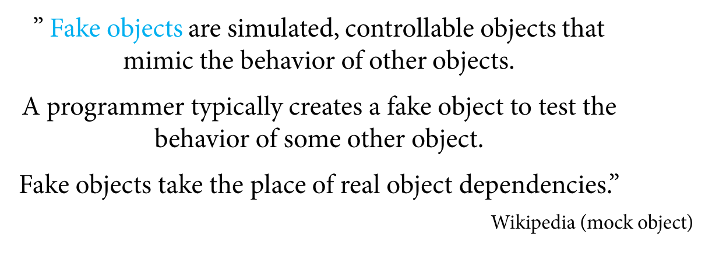

Table Of Contents
- Putting Things in Context
- What is Unit Testing?
- Why should I care?
- How does it work?
- Unit Tests in Action
- Extra Goodies
We All Have Tested Before
Unit Testing in Software
- Functional Tests
- – System
Integration Tests
- – System Tests
- – Integration
Tests
- – Unit Tests
- Non Functional Tests
- – Security,
Performance, Usability…
|
|
Tests that Test Units Of Code in Isolation
Automated and Repeatable
- Run With One Click*
- => *It can be fully
automated
- Deterministic
- Once Written Remain For Future Use
- Anyone Can Run Them
- Easy to Implement and Run
- Run Quickly
Trustworthy
Readable
Maintainable
A Simple Unit Test
public class Calculator {
public int Add(int a, int b) {
return a + b;
}
}
Unit Tests. Summary
- Test Units of Code in Isolation
- Automated and Repeatable
- Easy to Implement and Run
- Run Quickly
- Trustworthy, Readable and Maintainable
Why should I care?
Unit tests PROVE that your code actually WORKS
Why should I care?
Unit tests provide ultra-fast feedback
demonstrate concrete progress
increase productivity
keeps you in the zone
Why should I care?
Unit tests provide a safety-net and a sense of security
low-level regression test suite
it’s more fun to code with them than without
refactor mercilessly
improve design without breaking
Why should I care?
Unit tests provide high granularity bug detection
pinpoint a bug to the method-level
reduces the cost of bugs
Why should I care?
Unit tests provide a living document
it compiles!
it is always up-to-date
makes knowledge sharing easier
Why should I care?
Unit tests impose good design principles
Written by one, every one benifits
Why should I care?
Unit tests are one of the basic foundation components that enables
Continuous Integration and Continuous Delivery
Why Should I Care Wrap-Up
- Prove That Your Code Works
- Ultra-Fast Feedback
- Safety Net & Sense of Security
- Super High Granularity
- Living Documentation (always up-to-date)
- Impose Good Design Principles
- Written by one, everyone benefits
- Basic block for CI and CD
All You Need Is Love
- Unit Test Framework
- Mocking Framework
Mark Code As Tests and Organizing Tests
???
Assertion Library
- Let’s you assert correctness
- Provides a lot of built-in assertions
- Basic Assertions
- Assert.AreEqual(T expected, T actual)
- Assert.AreEqual(T noExpected, T actual)
- Assert.AreSame(T expected, T actual)
- Assert.IsTrue(bool condition)
- Assertions Also Available For Collections and Strings
- Asserting Exceptions
- User defined
The Unit Test Runner
- Runs Tests
- Provides feedback
- Red/Yellow/Green
What happens when a class has dependencies?
Use Fake Objects to Isolate Class Under Text
What are Fake Objects

Two Types of Fake Objects
- Stubs (passive testing)
- Mocks (active testing)